3D models from code
59 ready-made models for Godot 4.
A coding agent can build every model on this page with one command, change its size and parts, look at it as text, and check it: clean .glb files with textures and normal maps for brick, tiles, wood, bark, leaves and more, a node per moving part and the pivots Godot scripts expect. No Blender, no art tool, the same bytes every time.
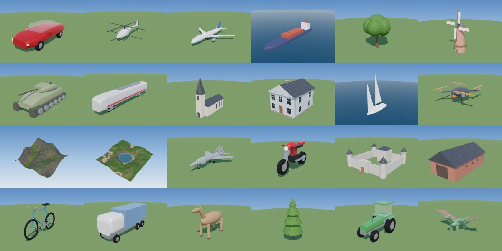
Real renders of the default model of each kind in three.js, with the textures and materials in the .glb and nothing added. They are game-ready base models, meant to be refined, not hand-sculpted art.
How an agent builds a model
- Identify.
godotwright model identify "a tractor"says what a thing is: its parts, typical size, variants, pivots and what to anticipate. English or Dutch, typos and descriptions work. - Build.
godotwright model build car --set width=1.9 -o car.glbfrom a ready-made kind, or from your own JSON spec of named parts. - View.
godotwright model view car.glbdraws front, side and top views as text, with a table of the parts, for agents that cannot see a picture. - Check.
godotwright model lint car.glb --archetype carscores geometry, materials and performance, and checks it is what it should be: required parts, pivots, wheel axes, size, direction.
Vehicles
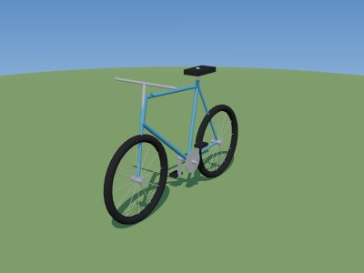
Bicycle
A city bicycle: a diamond frame of round tubes with a sprung leather saddle, rear rack with lamp, mudguards, chain guard and kickstand; spoked wheels (36 laced spokes) on hubs with their pivot at the hub; a crank with chainring, arms and pedals that spins about the bottom bracket; and a fork with swept-back bar, grips, bell and lamp that steers the front wheel.
npx -y godotwright model build bicycle -o bicycle.glb
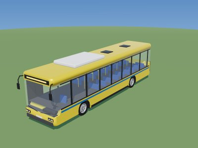
Bus
A low-floor city bus: a body lofted from its side silhouette with real wheel arches and rounded corners, a see-through window band over seats, poles and the driver's place, a roof with cooling unit and hatches, a destination display and rabbit-ear mirrors, two glazed passenger doors on the right-hand side hinged at their front edge, and steel wheels (twin at the rear) with the pivot at the hub.
npx -y godotwright model build bus -o bus.glb
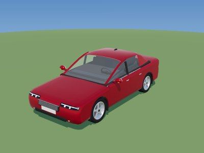
Car
A four-door saloon: a body lofted from its side silhouette with real wheel arches and rounded shoulders, a glass greenhouse with roof and pillars over a visible interior, four doors, hood and trunk lid on their hinges, alloy wheels with the pivot at the hub, light clusters, grille and mirrors.
npx -y godotwright model build car -o car.glb
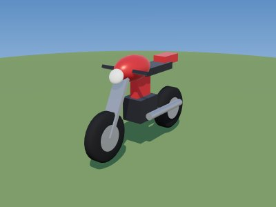
Motorcycle
A naked motorcycle: a trellis frame with a finned twin engine, radiator and exhaust headers into a side silencer, a sculpted tank, seat and tail, a swingarm with chain and shock, and a fork on a raked steering head that carries the handlebar, headlight, mirrors and the front wheel with twin discs; cast wheels with the pivot at the hub.
npx -y godotwright model build motorcycle -o motorcycle.glb
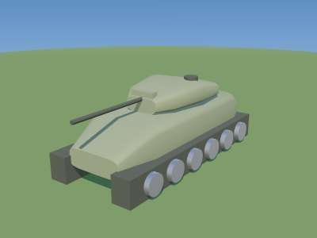
Tank
A main battle tank: a hull with sloped glacis, fenders and segmented side skirts; two track loops with grousers over a drive sprocket, an idler and a row of rubber-tyred road wheels on each side; and a faceted turret with cupola, sights, smoke launchers and bustle rack on the vertical turret-ring axis, carrying a gun with bore evacuator and muzzle that elevates about its trunnion.
npx -y godotwright model build tank -o tank.glb
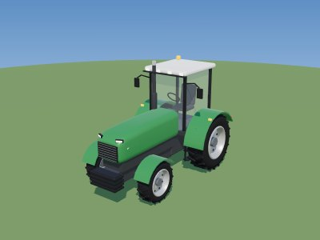
Tractor
A four-wheel-drive farm tractor: a rounded hood with grille, lights and front ballast, a glazed four-post cab with roof lights, seat and steering, big rear and smaller front wheels with chevron-lug tyres and their pivot at the hub, fenders, exhaust stack and a three-point hitch on its hinge.
npx -y godotwright model build tractor -o tractor.glb
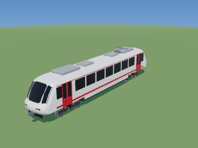
Train
An electric railcar with a cab at each end: a body lofted from its side silhouette with streamlined noses, raked windscreens, a rounded roof with cooling units and a pantograph, tinted window panes, livery stripes and two double sliding doors per side; underfloor equipment, and two bogies with springs, dampers and axle boxes that turn about their centre, carrying flanged wheels on standard gauge (1.435 m) with the pivot at the hub.
npx -y godotwright model build train -o train.glb
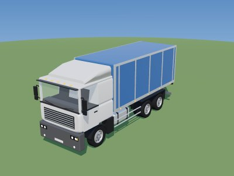
Truck
A rigid box lorry: a cab-over cab with a see-through windscreen and interior (dash and seats), roof deflector, grille, bumper lights, mirrors and doors; a ribbed cargo box with rear doors on a ladder frame with fuel tanks, silencer, side guards and underrun bar; a steering front axle and two rear axles with twin steel wheels, every wheel with its pivot at the hub.
npx -y godotwright model build truck -o truck.glb
Aircraft
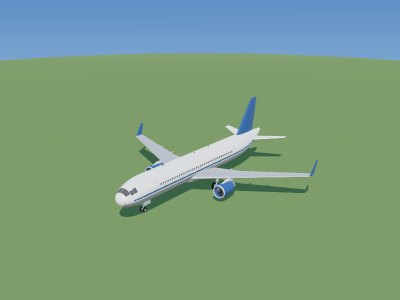
Airliner
A twin-engine passenger jet: a round fuselage with a curved nose and upswept tail cone, cockpit glazing and a row of cabin windows, doors, swept tapered wings with dihedral, winglets, ailerons and flap track fairings, turbofans with a fan and exhaust cone under the wings on pylons, a fin with rudder, a tailplane with elevators, a belly fairing, nav lights and landing gear with twin wheels.
npx -y godotwright model build airliner -o airliner.glb
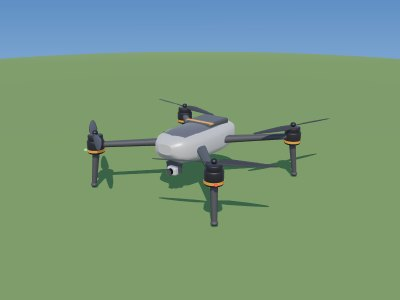
Drone
A quadcopter: a rounded body with a top shell, front sensors, a battery and a camera on a gimbal, four tapered arms in an X with motor pods and status lights, twisted two-blade propellers that turn in opposite directions on neighbouring arms, and landing legs under the motors.
npx -y godotwright model build drone -o drone.glb
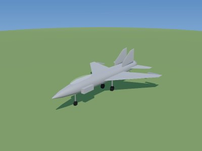
Fighter
A twin-engine jet fighter: a blended fuselage with leading-edge extensions, raked side intakes, a bubble canopy (hinged at its rear edge) over an ejection seat and instrument coaming, trapezoid wings with ailerons and wingtip missiles, canted twin fins with rudders, all-moving tailplanes, two nozzles, formation and nav lights and tricycle landing gear with doors.
npx -y godotwright model build fighter -o fighter.glb
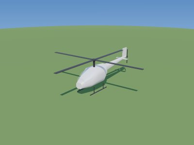
Helicopter
A medium twin-engine helicopter: a two-tone cabin with a glass cockpit and seats inside, framed doors and cabin windows, engine cowling with intakes and exhausts, a rotor head with blade grips and tip-painted blades that pitch about their root, a tail boom (its length follows the rotor) with fin, endplate stabiliser and tail rotor, skids, nav lights and antennas.
npx -y godotwright model build helicopter -o helicopter.glb
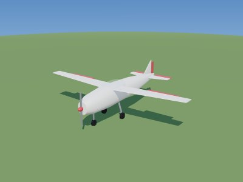
Light aircraft
A high-wing single-engine propeller aeroplane: a cowled nose with air inlets and exhaust, a cabin with windscreen, side windows, door frames and seats inside, strut-braced tapered wings with flaps and ailerons, a tailplane with elevators, a swept fin with dorsal fillet and rudder, a twisted two-blade propeller with spinner, fixed tricycle gear with wheel fairings, a two-colour cheat line, nav lights and a beacon.
npx -y godotwright model build light-aircraft -o light-aircraft.glb
Boats and ships
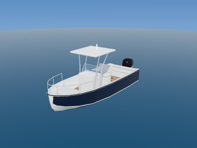
Boat
A centre-console motorboat: a deep-V planing hull with chines and a raised sheer, floating on the waterline (y = 0), a navy topside stripe and rub rail, a teak cockpit sole and a non-skid casting deck, a console with windscreen and wheel, helm, aft and bow seats, a bow rail, and an outboard engine that steers about its transom mount.
npx -y godotwright model build boat -o boat.glb
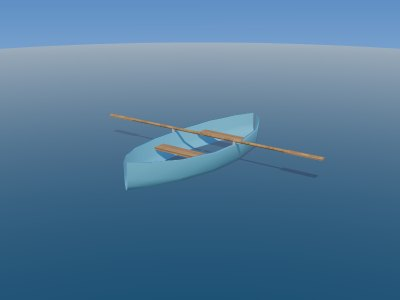
Rowing boat
A clinker-built double-ended rowing boat: lapped planking painted white outside with a varnished sheer strake, a varnished lining, bent ribs, stems and keel strip, three thwarts on risers and knees, floorboards, bronze oarlocks on the gunwale and a pair of oars that pivot in them.
npx -y godotwright model build rowing-boat -o rowing-boat.glb
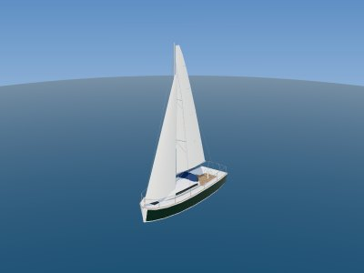
Sailboat
A cruiser-racer sloop: a round-bilge hull with dark topsides and a teak toe rail, a recessed cockpit with benches and a wheel, a coachroof with windows and a sprayhood, a fin keel with a lead bulb and a spade rudder, a deck-stepped mast with spreaders and standing rigging, lifelines, and cambered mainsail (on a boom that swings about the mast) and jib.
npx -y godotwright model build sailboat -o sailboat.glb
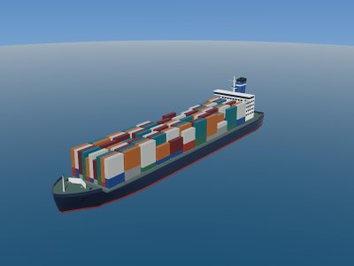
Ship
A container ship: a lofted steel hull with a raked, flared bow, a bulb and a transom stern, red antifouling below the waterline, container stacks on hatch covers, an aft accommodation block with a winged bridge, funnel and radar mast, a free-fall lifeboat, a rudder and a five-blade propeller.
npx -y godotwright model build ship -o ship.glb
Machines
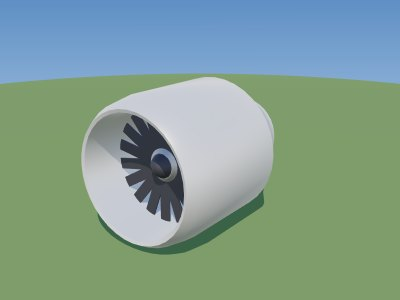
Jet engine
A turbofan engine on a transport stand: a nacelle with a polished intake lip and panel seams, a fan of twisted, swept wide-chord blades on a spinner that spins about the engine axis, outlet guide vanes, a core cowl, a core exhaust nozzle with a plug, and a yellow stand with cradles and casters.
npx -y godotwright model build jet-engine -o jet-engine.glb
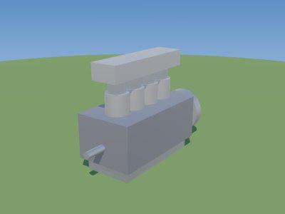
Piston engine
An air-cooled inline piston engine: a ribbed aluminium crankcase on a finned sump with mounting feet, a row of finned cast-iron cylinder barrels with a finned head and red rocker cover on each, pushrod tubes, exhaust runners into a collector, an intake plenum with air filter, injection pump and fuel lines, an alternator on a belt, a starter, and an exposed flywheel with a ring gear.
npx -y godotwright model build piston-engine -o piston-engine.glb
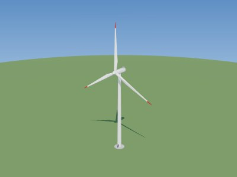
Wind turbine
A modern wind turbine: a tapered steel tower in flanged sections with a door, landing and steps on a concrete foundation, a streamlined nacelle with a cooler, met mast and aviation beacon that yaws on the tower top, and a rotor with a spinner and three twisted airfoil blades (round roots, red tips) that spins about the horizontal axis at hub height.
npx -y godotwright model build wind-turbine -o wind-turbine.glb
Buildings
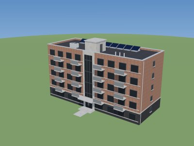
Apartment
A block of flats: a long brick block on a dark plinth with a flat roof behind a parapet with aluminium coping, framed windows with sills on every floor front and back, balconies with glass balustrades on the +Z front, a glazed stair core in the middle of the front with the entrance, a canopy and steps at its foot, gable windows, and a stair housing, plant and solar panels on the roof.
npx -y godotwright model build apartment -o apartment.glb
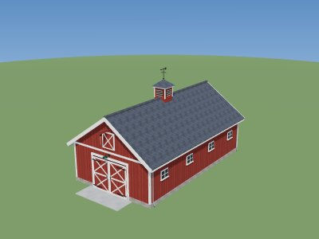
Barn
A farm barn: board-and-batten timber walls in barn red on a stone plinth, a slate gable roof with white barge boards, fascias and a ridge cupola with a weathervane, big hinged double doors with white X-braced frames in the +Z gable end, a hayloft hatch with a hay beam above them, a lamp over the doors and a row of four-pane windows along both long sides.
npx -y godotwright model build barn -o barn.glb
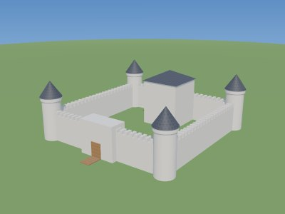
Castle
A square stone castle: four curtain walls on a footing with a wall-walk behind a crenellated parapet, arrow slits and a stair up from the paved courtyard; a round corner tower at each corner with a battered base, machicolations and a flared conical slate roof; a gatehouse in the +Z face with two drum towers, a portcullis, oak gates and a lowered drawbridge that meets a stone causeway over the moat; a square keep against the back wall with corner buttresses, bartizans, a hipped roof, a flag and an outside stair; a great hall with a tiled roof and chimney; and a well.
npx -y godotwright model build castle -o castle.glb
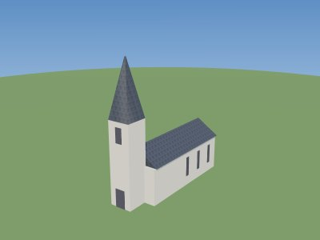
Church
A stone parish church: a long nave on a plinth with stepped buttresses between tall pointed (lancet) windows, a steep slate roof between coped gable parapets with a cross and a rose window at the east end, and a square west belfry at the +Z end with corner piers, string courses, a pointed doorway with steps, clock faces, paired louvred belfry openings, a parapet with corner pinnacles and an octagonal slate spire with lucarnes and a gilded cross.
npx -y godotwright model build church -o church.glb
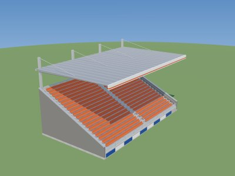
Grandstand
A covered grandstand along z: stepped concrete rows rising towards -x, split into blocks of seats with backrests by stepped aisles with handrails, a front wall with track-side boards and a railing, sloping end screens, a back wall with a glazed concourse and doors, and a cantilevered roof on masts with tie rods, a fascia and floodlights.
npx -y godotwright model build grandstand -o grandstand.glb
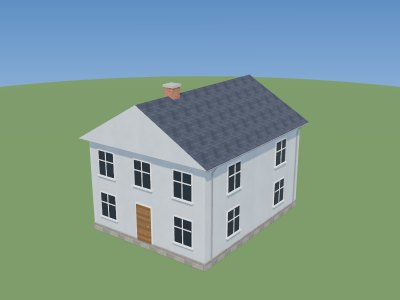
House
A house or small building: walls, roof, windows, a door and an optional chimney.
npx -y godotwright model build house -o house.glb
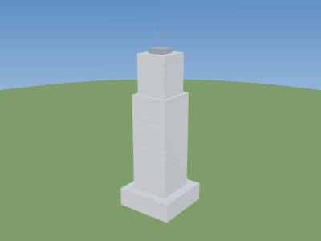
Tower
A high-rise office tower: a stone-clad podium on a paved plaza with a glazed ground floor and a glass entrance with a canopy, revolving door and steps on the +Z side, a curtain-wall shaft of dark glass with aluminium mullions, floor bands and recessed corners, a setback upper block with a terrace, a louvred plant crown and a tapering mast with a warning light.
npx -y godotwright model build tower -o tower.glb
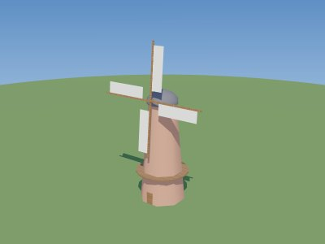
Windmill
A traditional Dutch tower mill: a tapering eight-sided brick tower on a stone plinth with a green door and small white-framed windows, a stage (gallery) with railing and braces, a thatched boat-shaped cap that turns about the tower axis (with its tail pole and winding wheel down to the stage, on the same axis), and four lattice sails with furled sailcloth on a slightly tilted axle that spin about their hub.
npx -y godotwright model build windmill -o windmill.glb
Roads, rails and bridges
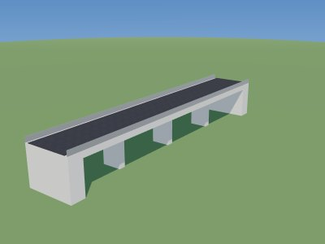
Bridge
A girder road bridge: a concrete deck slab on precast I-girders with an asphalt carriageway (centre and edge lines), a raised footway and an edge beam with a steel railing on each side, a row of piers under it (rounded columns on a pile cap with a hammerhead crosshead and bearings under every girder, and a diaphragm between the girders) and a stone-faced abutment with a backwall at each end.
npx -y godotwright model build bridge -o bridge.glb
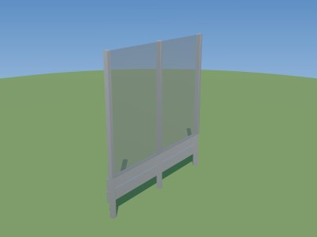
Crash barrier
A motorsport guardrail section along z: H-section steel posts every 2 m on base plates, carrying two stacked galvanised W-beam rails on spacer blocks on the track side (-x), bolted through the valley of the beam, with a catch fence behind it: a welded wire mesh, three tensioning cables and a top tube, up to the fence height.
npx -y godotwright model build crash-barrier -o crash-barrier.glb
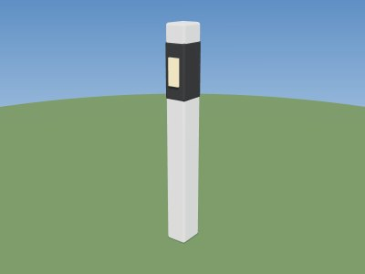
Delineator
A white roadside delineator post with a black band near the top and a reflector on the face that looks along +Z, towards the traffic.
npx -y godotwright model build delineator -o delineator.glb
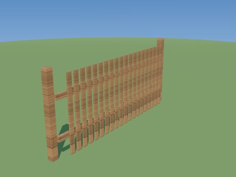
Fence
A section of wooden picket fence along z: a square post with a cap at each end, two horizontal rails fixed to the front of the posts and evenly spaced pickets with pointed tops nailed to the rails, the wood grain running along every board.
npx -y godotwright model build fence -o fence.glb
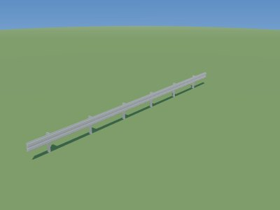
Guard rail
A length of steel guard rail along z: posts every 2 m, a spacer block on each post and a corrugated beam that faces the traffic on +X.
npx -y godotwright model build guard-rail -o guard-rail.glb
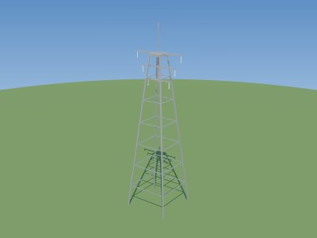
Power pylon
A lattice transmission pylon for a double circuit: four legs on concrete footings that lean in to a waist and run straight up a cage, X-braced on every face with a strut at each panel, an anti-climbing guard, three lattice crossarms on each side (the middle one longest) with a string of glass cap-and-pin insulator discs, a clamp and a grading ring hanging from every tip, and an earthwire peak on top.
npx -y godotwright model build power-pylon -o power-pylon.glb
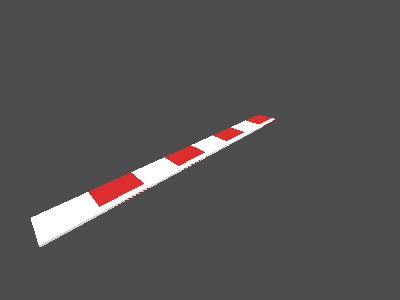
Race kerb
A red-and-white race kerb along z, 1.2 m wide: painted concrete blocks about 1.5 m long that rise in a smooth convex curve from flush at the track edge (x = 0) to 6 cm, with chamfered ends and a rounded concrete lip along the outer edge.
npx -y godotwright model build race-kerb -o race-kerb.glb
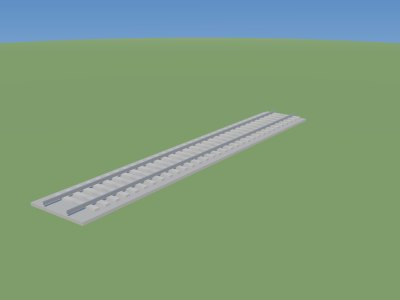
Railway track
A length of standard-gauge railway track along z: a ballast bed with sloped shoulders, concrete monoblock sleepers about every 0.6 m with cast-in shoulders, rail pads and spring clips, and two flat-bottomed rails (UIC 60 profile, inclined 1:40) with their heads 1.435 m apart and a polished running band.
npx -y godotwright model build railway-track -o railway-track.glb
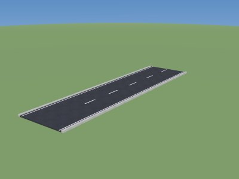
Road
A straight road segment along z: a crowned asphalt surface with a dashed centre line and solid edge lines, a concrete channel with gully grates along each edge, a raised kerb on each side made of 1 m units, and a paved pavement behind it with an edging strip.
npx -y godotwright model build road -o road.glb
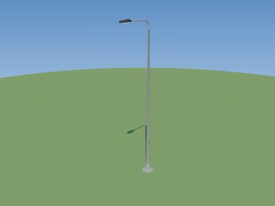
Street lamp
A street lamp: a conical galvanised steel pole on a flanged base with a bolt cover and a service door, a curved outreach arm that bends out towards +Z over the road and rises slightly, and a flat LED luminaire on its end with a glowing drop lens underneath and a photocell on top.
npx -y godotwright model build street-lamp -o street-lamp.glb
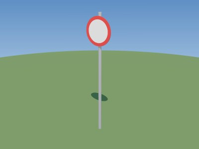
Traffic sign
A round road sign on a steel pole: a red-rimmed white plate that faces +Z, two clamps that hold it, and a cap on the pole.
npx -y godotwright model build traffic-sign -o traffic-sign.glb
Plants
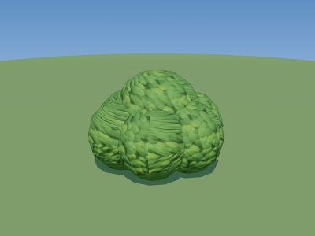
Bush
A shrub: a dome of many overlapping, lumpy leaf masses in two greens around a central core (a low ring whose count sets how full it is, a ring above it and a crown on top), over short woody stems; it stands on y = 0.
npx -y godotwright model build bush -o bush.glb
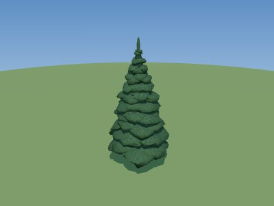
Conifer
A spruce-like conifer: a straight, tapering trunk with a few dead twigs low down, and a narrow cone of eleven whorls of drooping, needle-covered branches around a dark core, each whorl turned against the one below and closer together towards the pointed leader.
npx -y godotwright model build conifer -o conifer.glb
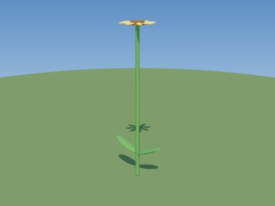
Flower
A flower: a slender stem that bows a little under its head, two arching leaves set alternately low on the stem, and a head turned slightly to the front: a green calyx, two rows of broad, arched petals around a domed centre.
npx -y godotwright model build flower -o flower.glb
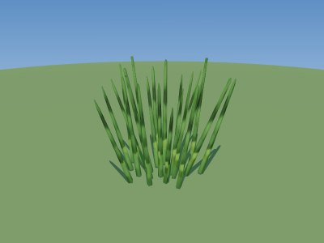
Grass
A tuft of grass: creased, tapering blades that grow from a low mound of thatch, each arching outwards by its own amount and to its own height, with a few dry, straw-coloured blades among the green ones.
npx -y godotwright model build grass -o grass.glb
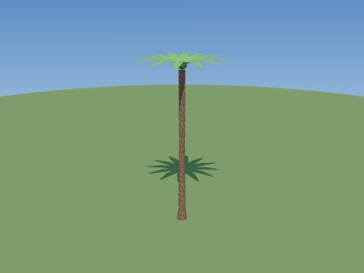
Palm
A coconut-style palm: a slim, gently leaning trunk ringed with leaf scars and swollen at the foot, a crown shaft with a cluster of coconuts, and a ring of long, arching feather fronds whose leaflets hang down on both sides of the midrib; every frond is its own node with its pivot at the crown, so it can sway.
npx -y godotwright model build palm -o palm.glb
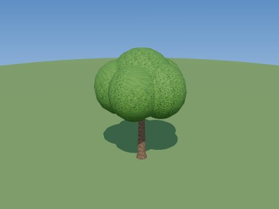
Tree
A broadleaf tree: a flared trunk with surface roots that forks into curving limbs, each with a side twig, and a domed crown of overlapping lumpy clusters of foliage at the limb and twig ends, in two shades of green.
npx -y godotwright model build tree -o tree.glb
Terrain and water
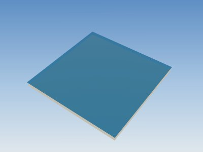
Sea
A sea: a flat, subdivided water plane at sea level (y = 0) for a wave shader, and a flat sea floor below it.
npx -y godotwright model build sea -o sea.glb
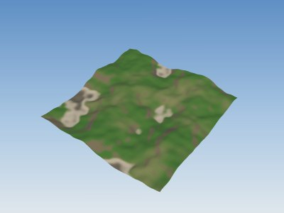
Terrain
A heightmap terrain tile: a grid of ground heights from seeded noise (plains, hills, mountains or an island), with smooth normals, an optional lake and an optional river.
npx -y godotwright model build terrain -o terrain.glb
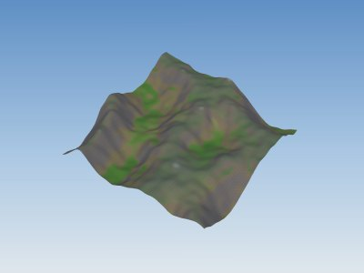
Mountains
The same terrain kind with ridged mountains. Neighbouring tiles continue each other exactly.
npx -y godotwright model build terrain --set relief=mountains --set maxHeight=90 -o mountains.glb
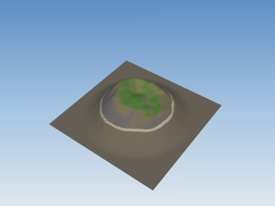
Island
One landmass with the sea floor around it.
npx -y godotwright model build terrain --set relief=island -o island.glb
Lake
A lake carved into the ground, with the water level just under the lowest point of its shore.
npx -y godotwright model build terrain --set lakeRadius=45 --set lakeDepth=8 -o lake.glb
Creatures
Dragon
A four-legged dragon: a scaled, lofted body with a ridge of back plates, an S-curved neck, a horned head with brow ridges, glowing eyes, fangs and a hinged, half-open jaw, two bat wings hinged at the shoulders (arm bones, four fingers and a scalloped membrane), clawed legs whose knees and elbows bend the right way, and a long tail that sweeps down and ends in a spade.
npx -y godotwright model build dragon -o dragon.glb
Horse
A horse in true proportions (a bay with black legs, mane and tail): a lofted barrel with withers, back and croup, a deep, arched neck with a mane, a long head carried nose-down with eyes, nostrils, pricked ears and a forelock, slender legs with knees, hocks that bend backwards, fetlocks, pasterns and hooves, and a full tail.
npx -y godotwright model build horse -o horse.glb
Humanoid
A person in a T-pose for rigging, in real proportions (about 7.5 heads tall): a shaped torso and hips, a neck and a head with hair, eyes, nose and ears, arms with elbows, hands with fingers and a thumb, legs with knees and shoes, in a T-shirt and trousers.
npx -y godotwright model build humanoid -o humanoid.glb
Spacecraft
Rocket
A two-stage launch rocket standing upright on its engines: a ring of hollow nozzle bells (pivot at the throat) under a heat shield, a first stage with aft skirt, intertank band and cable raceway, four airfoil fins, a dark interstage, a second stage and an ogive payload fairing with its split line.
npx -y godotwright model build rocket -o rocket.glb
Satellite
A communications satellite on its launch adapter ring: a box-shaped bus in crinkled gold foil with mirror radiators on the sides, a solar array wing on each side (a yoke and three cell panels with bus bars, hinged at the bus), two large reflectors with feed horns on arms, a small top dish, horns and an omni antenna, star trackers and thrusters at the corners.
npx -y godotwright model build satellite -o satellite.glb
Spaceship
A small science-fiction fighter: a lifting-body hull with a dark spine and accent stripes, a bubble cockpit (+Z) over a seat, side intakes, swept wings with a cannon at each tip, two engine nacelles with glowing nozzles (pivot at the throat) and canted fins, nav lights, RCS blocks, a sensor dome, and three landing legs hinged at the hull that it stands on (y = 0).
npx -y godotwright model build spaceship -o spaceship.glb
Props
Barrel
A 55-gallon tight-head steel drum: a lathe-turned shell with rolled chimes at both rims, two swaged rolling hoops and pressed beads, a recessed top head (the lid) with an embossed ring and a large and a small bung, standing on y = 0.
npx -y godotwright model build barrel -o barrel.glb
Campfire
A burning campfire: logs of varying size leaning together in a teepee (bark below, charred black above with glowing tips and pale cut ends), a glowing bed of embers with charcoal, translucent flame tongues with a marker for particles and a light, a scorched hearth and a ring of irregular stones, on y = 0.
npx -y godotwright model build campfire -o campfire.glb
Chair
A solid-wood dining chair facing +Z: a seat of glued boards on an apron frame, four legs joined by an H-stretcher, and back legs that rise into raked posts holding a crest rail, a low rail and slats (back at -Z).
npx -y godotwright model build chair -o chair.glb
Crate
A nailed wooden shipping crate on two skids: walls of single boards with dark gaps between them, a batten frame with a diagonal brace on every wall, two-board corner posts, a braced lid of boards and rows of nail heads.
npx -y godotwright model build crate -o crate.glb
Shipping container
An ISO shipping container, 8 ft wide and 8 ft 6 in tall (9 ft 6 in high cube): trapezoidal corrugated side and front walls, a roof with shallow bows, corner posts, rails and corner castings with apertures, forklift pockets, and recessed double doors at the rear (-z) hinged at the outer edges, each with corrugated panels, two locking bars with cams, guides and handles, and keepers on the frame.
npx -y godotwright model build shipping-container -o shipping-container.glb
Table
A solid-wood farmhouse table: a top of planks along the length with a breadboard end across each end, four square legs, an apron frame under the top (front, back and side rails) and a low H-stretcher.
npx -y godotwright model build table -o table.glb
FAQ
Do I need Blender or Godot installed?
No. Models are built and checked by Godotwright itself. Godot only loads the result when you open the .glb in your project.
Can I change the models?
Yes. Every kind has parameters with ranges (godotwright model kinds lists them), and every recipe is a JSON spec you can copy and edit.
Can a cheap model like Haiku or a Flash model do this?
Yes, with limits. In a small test, six Haiku agents each built a recognisable model, but they worked blind; that is why model view and a check for loose parts exist. See the write-up.
How good are they?
They are correctly scaled, textured low-poly models with the right parts and pivots: real windows and frames, bevelled edges, glowing lamps, brick, tiles, wood and foliage with normal maps. Not sculpted art, but a solid start that an agent can refine, and models that load and animate in Godot without fixing.